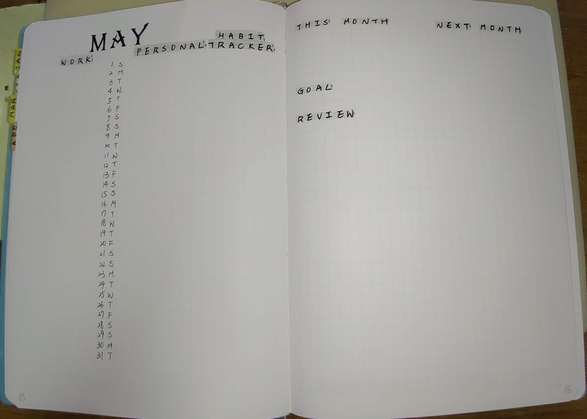
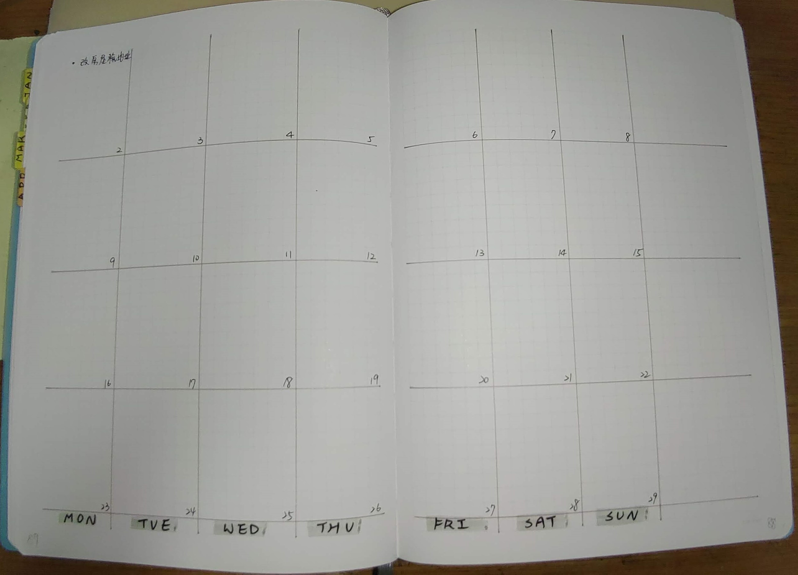

2022年5月份子彈筆記格式
這個月打算簡化手帳的設計，所以預先設計好的頁面只會有4頁
月記事/目標/回顧
左側是月記事，右側是紀錄本月/下個月待辦事項，下方則是本月目標以及回顧

- 月記事: 日期寫在中間分成左右兩半，左邊紀錄工作上的事件，通常是紀錄重要會議的開會時間。右邊則是個人生活事項或是心情日記，另外最右邊留了一區紀錄習慣追蹤。
- 本月/下月待辦: 一些臨時的待辦事項，但還不確定時間的，我會先紀錄在這邊，等確定時間後再安排進這個月的週記事內，或是到FutureLog內
- 目標/回顧: 先前我會在月初時立下4~5個目標，但回顧執行成果通常都沒有達成，這個月嘗試看看只立下一個目標，這個月就專心完成這個目標。回顧部份，以前會依照生活、財務、工作、成長…等分類寫，但是發現不太適合自己。上個月嘗試依照月初設計的目標，填寫成果&感想，比較有達到回顧的效果，這個月也會繼續這個模式。
週記事
跨頁的月(週)記事，這是第一次嘗試的格式，以下是我預計會使用的方式

雖然這頁看起來跟傳統月記事好像差不多，不過使用上我會以一週作為單位，填寫這週的待辦事項。如果這週沒做完的事，就畫向下箭頭，移到下週進行。至於當日事項移到隔天的情況，可能就不會紀錄在這邊，而是直接在日記事上轉移到下一天。最右側的空白處，預計會簡單寫一下這週總結。
日記事
第5頁開始是日記事。先前我都是將跨頁分成7格紀錄一整週的行程，每週規劃跟當日事項都在同一區塊進行。這個月打算回歸子彈筆記最原本的寫法，一天過完了隔天接著空白處繼續寫下去。事先規劃則放到上述的週記事內。
結尾
這個月會想要做調整，主要是因為從這個月開始，工作又導向同時進行多個短期專案的形式，所以增加了週記事頁面，讓專案進度比較好追蹤。
這次也移除或簡化了不常利用的頁面，像是HabitTracker，之前我都會給一頁獨立頁面，填寫了很多個想要追蹤的習慣，不過後來發現有些項目的達成次數實在是寥寥無幾，有些則已經養成習慣，不需要再特別紀錄。這個月只保留了運動這項想要養成的習慣跟健康紀錄，所以合併到了月記事的空間內。
另一個在這次移除的頁面是Brain Dump-紀錄隨時想到的任何想法。先前在Youtube上看到這個頁面的使用方式，覺得很不錯也跟著用了好幾個月。不過我自己使用上有遇到一個問題是，有時隨手紀錄下來的片段想法，後續看到時會忘記是什麼時候記下來的，造成即使看到也不太記得前因後果。剛好這次回歸使用日記事，所以這些零碎的想法，就會直接紀錄在當天的記事內。
以上是這個月的子彈筆記格式分享，這次做了一些新的嘗試，希望可以使用順利，到了月底再來分享心得!